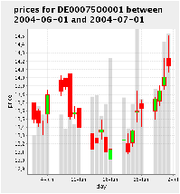
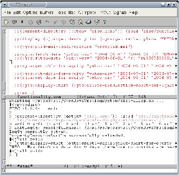
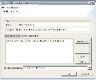
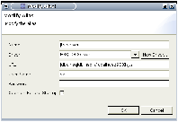

Open Java Trading System
Dokumentation
4th December 2004
Table of Contents
1 Java Data Objects
In the Java Data Object layer you will find classes that
serve as the representation of the data and meta-data which is
used as the basis for later analysis. Because the data is represented
in different forms, e.g. as java objects, as rows in a database or as
xml files we use the object relational mapping tool
castor to map between the diferent
representations.
1.1 Meta-Data Classes
In the end we want to be able to do data analysis on the
market data. We gather the market data via publicly available services
like yahoo finance or onvista. These services we call observers,
because they observe the market activities.
One given equity which is uniquely identified by its ISIN number is
traded at several different markets, e.g. the NYSE or the German
XETRA. Therefore at a given time there is not one single price for a
given equity, but there are as many prices as there are
markets. Actually these price differences will be used by arbitraters
to generate profits.
Up to now we have already the concepts ``Observer'', ``MarketPlace'' and
``Equity'' which we all need to describe. In the meta data layer there
is therefore a class for every such concept. These classes all derive
from the general base class Subject:
public class Subject {
private int id;
private String name;
private String description;
private String urlSources;
}
The name uniquely identifies the subject in its category (Observer,
MarketPlace or Equity). The description is used to provide some documentation
about the subject and the urlSources is a white-space
separated list of urls to web resources which are relevant for the
given subject.
The derived concepts Observer, MarketPlace and
Equity currently all do not provide any additional
information:
public class Observer extends Subject {
}
public class MarketPlace extends Subject {
}
public class Equity extends Subject {
}
Above we said that equities are uniquely identified by their ISIN
number. But ISIN numbers are not the only means that people use to
identify equities. In Germany for example there are WKN numbers in
widespread use or yahoo uses its own yahoo symbols to identify
securities, companies or indices. In order to be able to find equities
via these alternative identifiers we introduced the concept of aliases:
public class Alias {
protected int id;
protected Subject subject;
protected AliasType type;
protected MarketPlace market;
protected String alias;
}
Normally there is an authority that assigns these alternative
identifiers. These authorities are identified via the
AliasType element and we will have a look at them in a
minute. Sometimes an alias is closely related to a market place that
uses them and the MarketPlace element can be used to
express this close relation. The alias itself is of type
String so that it can be used to express anything.
public class AliasType {
protected int id;
protected String name;
protected Observer observerLink;
protected String description;
protected String urlSource;
}
If there is such a central authority which assigns aliases you will
have to define the authority as a element of type
Observer. The description and
urlSource have similar meanings as in the case of the
Subject class.
In general elements of type Subject have more details as
there were given as properties in the Subject class. These
additional properties can be described via the Property
class.
public class Property {
protected int id;
protected PropertyType type;
protected String name;
protected String description;
}
All properties that express a quantity of similar meaning are of the
same PropertyType. You can think of properties of the same
type as of quantities with the same unit or at least with units that
can be converted into eachother.
public class PropertyType {
protected int id;
protected String name;
protected String description;
}
As an example we can take the properties ``min-day-price'',
``max-day-price'', ``opening-price'' and ``closing-price''. All of
these properties are of the same type ``price''. These quantities do not
necessarily have the same unit, e.g. sometimes they are expressed in
€ and sometimes they are expressed in $, but you can convert
from the one to the other.
While we are just talking about units. There is also a class that
describes units:
public class Unit {
protected int id;
protected String name;
protected PropertyType propertyTypeLink;
}
There is a propertyTypeLink in order to express that all
units that have the same propertyTypeLink can be converted
back and forth to oneanother.
In order to configure the data import methods there are classes
DataSource and DataSourceType. The
DataSourceType can be seen more or less as a ``mime
type''. You should be able to read from all data sources with the same
DataSourceType with the same data source handler code.
public class DataSourceType {
protected int id;
protected String name;
protected String description;
}
The DataSource class looks as follows:
public class DataSource {
protected int id;
protected DataSourceType type;
protected String url;
protected String description;
protected Observer observerLink;
protected String handlerClassName;
}
The url element should be seen as a pattern that the
handler code can use to retrieve actual data for a specific
equity. The observerLink tells you which service provides
the data and the handlerClassName will be used to create a
handler class via Java reflection.
But because the handler class will need more information in order to
do its job, which it will have to retrieve from the database there is
an additional configuration class called
ObserverDataSourceConfiguration. When the handler is
called it will use this configuration data to determin which data can
be found in which position on the retrieved page.
public class ObserverDataSourceConfiguration {
protected int id;
protected Property property;
protected MarketPlace observedAt;
protected DataSource observerDataSource;
protected Unit unit;
protected String colu;
}
The property tells the handler which property is
configured via this ObserverDataSourceConfiguration
instance. Because a given observer can observe several markets we need
to tell the handler which market-place we are talking about. The
handler needs to be informed which unit the property is measured in
aswell. The String field colu is there to
provide additional information to handlers in a free format. The name
``colu'' reminds of its origin. Initially it was meant to point to
a column in a csv file format.
1.2 Data Classes
All data classes derive from one common base class:
public class DataItem {
protected int id;
protected Date time;
protected Subject subject;
protected ObserverDataSourceConfiguration source;
}
The data is actually what we are interested in for our later
analysis. The data that we collect is a function of time, it belongs
to a specific subject, it describes a certain aspect/property of that
subject, it is observed by an observer at a certain market-place and
finally it has a unit. All the information which is not directly
present in this class can be retrieved by following the object graph
in the source element.
There are subclasses of this DataItem class for the
concrete data types: Boolean, Double, Int, String and Time.
2 Interactive usage
2.1 SISC a Scheme implementation in Java
This section is here to give you a preliminary feeling of
what the project can do for you and where the project is going in the
future. The project is a pure Java project and designed in such a
way that you can easily integrate its functionality into your own
applications. For my personal use I prefer to work with the
OpenJavaTradingSystem functionality in an interactive
way. Therefore I've written some adapter code to be able to call the
OpenJavaTradingSystem functionality from
SISC, a pure Java
implementation of the algorithmic programming language
Scheme1.
Other types of integration, e.g. into
Jython or
BeanShell seem to be other options.
The following explanations assume that you are in the
OpenJavaTradingSystem project directory.
The first step before you can start to work with the
OpenJavaTradingSystem is to start the database server in the
backgroud:
> java -cp lib/hsqldb.jar org.hsqldb.Server -database.0 data/jts -dbname.0 jts
Basically this step is optional if you change the ``jdbc_location''
property in the conf/jts.properties configuration
file to use the ``:file:'' access method. The advantage of using the
database server is that you can connect to it from several clients,
whereas if you choose to use the ``:file:'' access method only the
OpenJavaTradingSystem application is able to access it.
In the project root directory you will find a modified startup
script2 to start SISC. There is an ant task sisc-repl aswell, which
you can use to start the read-eval-print loop. Now you can work
interactively with the system. Let's start with the initialization
procedure. One day this initialization procedure will be integrated
into the bash startup script, but until then you have to initialize
the system as follows:
> (current-directory (getenv "sisc.home"))
> (load "sisc/functionality.scm")
> (ojts:init)
If you start the system for the first time you also have to initialize
the content of some database tables from an xml file:
> (ojts:read-xml-configuration "testread.xml")
From here on you can start retrieving data from the internet or
displaying data in a graph. All of the following commands are
independent and can be executed3 one by one without the
others:
> (ojts:fetch-data "yahoo-csv" "2004-06-01" "2004-08-23"
"DE0007500001" "XETRA")
> (ojts:fetch-data "yahoo-csv" "2004-06-01" '()
"DE0007500001" "XETRA")
> (ojts:get-ohlc-for-equity "yahoo-csv" "2004-06-01" "2004-07-01"
"DE0007500001" "XETRA")
> (ojts:get-data-for-equity "yahoo-csv" "2004-06-01" "2004-07-01"
"DE0007500001" "XETRA" *CLOSING-DAY-PRICE*)
> (ojts:get-data-for-equity "yahoo-csv" "2004-06-01" "2004-07-01"
"DE0007500001" "XETRA" *TRADING-DAY-VOLUME*)
> (ojts:display-chart
(ojts:create-candlestick-chart-for-equity
"yahoo-csv" "2004-06-01" "2004-07-01" "DE0007500001" "XETRA"))
All operations that require data will try to find that data in the
database. If the data cannot be found the system will try to get
the data from the web. This action is the same as what happens when
you execute the ojts:fetch-data
statement. Here you can
see the result for one of the
ojts:get-data-for-equity
operations from above:
> (ojts:get-data-for-equity "yahoo-csv" "2004-06-01" "2004-07-01"
"DE0007500001" "XETRA" *TRADING-DAY-VOLUME*)
INFO - Was fetching data for 0 days therefore no commits are necessary.
(("2004-06-01" "integer" 1267190.0)
("2004-06-02" "integer" 2241070.0)
("2004-06-03" "integer" 1953370.0)
("2004-06-04" "integer" 2015380.0)
("2004-06-07" "integer" 1953470.0)
("2004-06-08" "integer" 1487590.0)
("2004-06-09" "integer" 3193410.0)
("2004-06-10" "integer" 1641250.0)
("2004-06-11" "integer" 1635660.0)
("2004-06-14" "integer" 2541210.0)
("2004-06-15" "integer" 2598440.0)
("2004-06-16" "integer" 1913340.0)
("2004-06-17" "integer" 2303420.0)
("2004-06-18" "integer" 3802480.0)
("2004-06-21" "integer" 2514830.0)
("2004-06-22" "integer" 1499570.0)
("2004-06-23" "integer" 2305450.0)
("2004-06-24" "integer" 4740060.0)
("2004-06-25" "integer" 2459800.0)
("2004-06-28" "integer" 2783660.0)
("2004-06-29" "integer" 2555130.0)
("2004-06-30" "integer" 4322920.0)
("2004-07-01" "integer" 4587870.0))
And in figure 1 you can see the output
of the following chart creating command:
> (ojts:display-chart
(ojts:create-candlestick-chart-for-equity
"yahoo-csv" "2004-06-01" "2004-07-01" "DE0007500001" "XETRA"))
Figure 1: Sample Candlestick Chart

2.2 Using the ilisp Emacs mode
Normally you won't work with the Scheme interpreter on
the commandline. Usually one uses a more convenient environment like
the ilisp emacs
mode. If you are on a unix system probably you can get a package for
your package system to install ilisp. If you are on windows you can
follow the installation procedure described at
Setting up an
IDE with Emacs on Windows.
As soon as you have a working ilisp mode you have to add the following
section to your .emacs file in order to make ilisp work together with
SISC:
(setq ilisp-*use-fsf-compliant-keybindings* nil)
(add-hook 'ilisp-load-hook
'(lambda ()
(defdialect sisc "SISC Scheme"
scheme
(setq ilisp-program "~/workspace/OpenJavaTradingSystem/sisc-ilisp.sh") ; assume scheme is in path.
(setq comint-prompt-regexp "^> ")
(setq ilisp-eval-command
"(car (list (eval (read (open-input-string \"%s\"))) \"%s\" \"%s\"))"
ilisp-package-command "%s"
ilisp-macroexpand-command "(expand '%s);%s"
ilisp-trace-command "(trace %s);%s"
ilisp-untrace-command "(untrace %s);%s"
ilisp-directory-command "(current-directory);%s"
ilisp-set-directory-command "(current-directory \"%s\")"
ilisp-describe-command "(describe %s)"
comint-ptyp t
comint-always-scroll t
ilisp-last-command "*"
))))
(set-default 'auto-mode-alist
(append '(("\\.scm$" . scheme-mode)
("\\.sisc$" . scheme-mode))
auto-mode-alist))
(setq scheme-mode-hook '(lambda () (require 'ilisp)))
You have to adapt the ilisp-program line to suite your set-up.
Now you are ready to use the Scheme interface to the
OpenJavaTradingSystem from within the ilisp emacs mode. In emacs
use M-x run-ilisp
and when you're asked for the
``Dialect'' answer with ``sisc''. This should startup the Scheme
interpreter in your emacs window.
Details about the usage of the ilisp emacs mode can be found in its
manual.
And finally in figure 2 is a screenshot of using
the OpenJavaTradingSystem via the Scheme interface from within emacs.
Figure 2: Emacs -- Ilisp -- SISC

2.3 Configuring the SQLExplorer plugin for Eclipse
As mentioned above, the advantage of starting the database
server instead of using the ``:file:'' access method is that you can
connect to the database via the network with other programs aswell. I
personally have started to use the
SQLExplorer plugin for the
Eclipse IDE. The packed distribution can be found on their website
under ``Documents & files''. In order to install it you only have to
unpack the distribution into the Eclipse directory.
After a restart of Eclipse you will have to open the SQLExplorer
perspective. At the left top in the ``Drivers'' tab you have to
configure the ``HSQLDB Server'' by clicking on it with the right mouse
button and selecting ``Change the selected Driver''. Look at the
screen shot in figure 3 to see how you should
configure these fields.
Figure 3: SQLExplorer HSQLDB driver configuration

After adding the right jar file you have to click the ``List Drivers''
button and select the hsqldb JDBC driver as you can see in the screen
shot.
The next step is to configure in the ``Aliases'' tab an alias for your
database. In screen shot 4 you can see
what to put there.
Figure 4: SQLExplorer HSQLDB alias configuration

Now you are ready to connect to the database (make sure the server is
running) via the ``Connections'' tab at the left bottom. As soon as
you are connected you will see the ``Database Structure View''
tab. Use this view to browse through the available tables in the
database.
As next step you can click with your right mouse button on a table
name and use ``Generate Select in SQL Editor'' to open a prefilled SQL
Editor tab. From here on you should be able to find yourself your way
through the functionality of this plugin.
- 1
- A good first introduction can be found at
Teach Yourself Scheme in Fixnum Days
- 2
- At the moment there is no equivalent windows script
available, but I would be happy to integrate one if you can provide me
one.
- 3
- For those who do not know
Scheme one remark: The indentation and newlines are optional. You
can execute every command on a single line.
This document was translated from LATEX by
HEVEA.